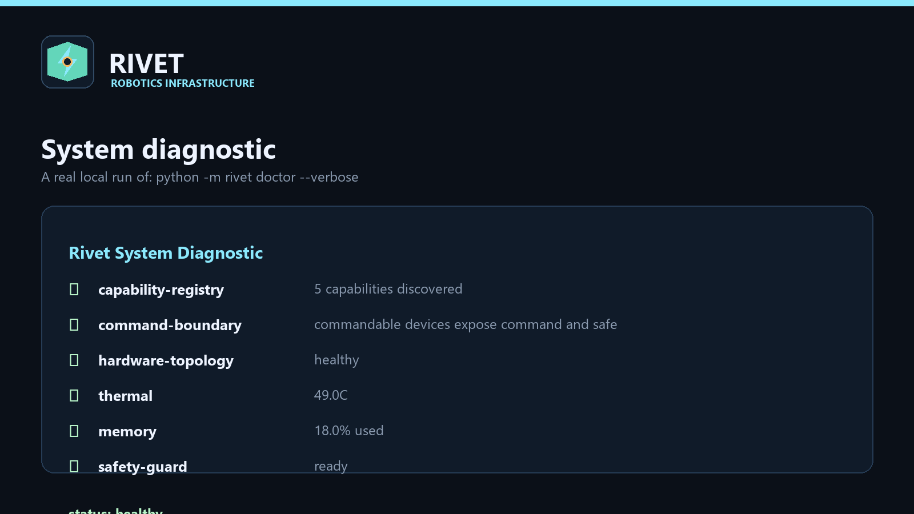
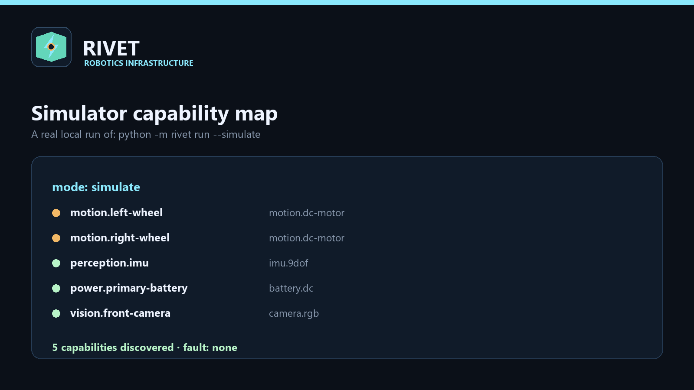

01 / Hardware
One command boundary
Device contracts, capability discovery, authority grants, leases, and simulator-backed drivers keep applications independent from wiring details.
Raspberry Pi robotics infrastructure
An installable runtime for robot hardware, perception, roles, skills, missions, and auditable operation.
01 / Hardware
Device contracts, capability discovery, authority grants, leases, and simulator-backed drivers keep applications independent from wiring details.
02 / Continuum
Profiles, governors, perception provenance, topology, lifecycle, and offline cluster primitives make resource changes visible.
03 / Vocation
Roles, SkillGraph, Synapse, Motion IR, passports, missions, and teams describe what a robot is qualified to do.
Generated from real local runs
Rivet ships a dependency-free simulator so the command boundary, diagnostics, and fault response can be exercised before physical adapters are connected.


Try it locally
$ python -m pip install -e ".[dev]" $ python -m rivet doctor --verbose ✓ capability registry ✓ command boundary ✓ simulator backend ✓ preflight ready